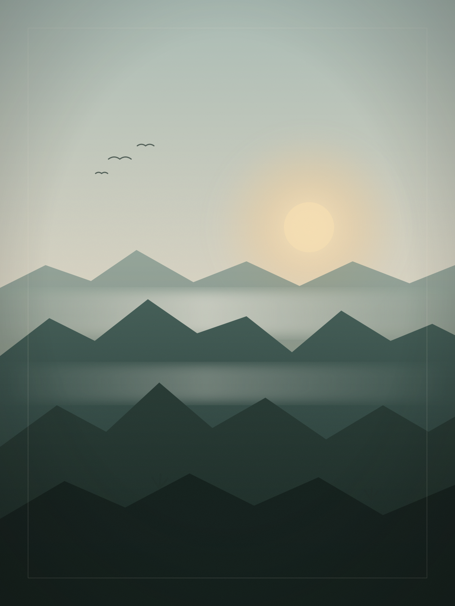
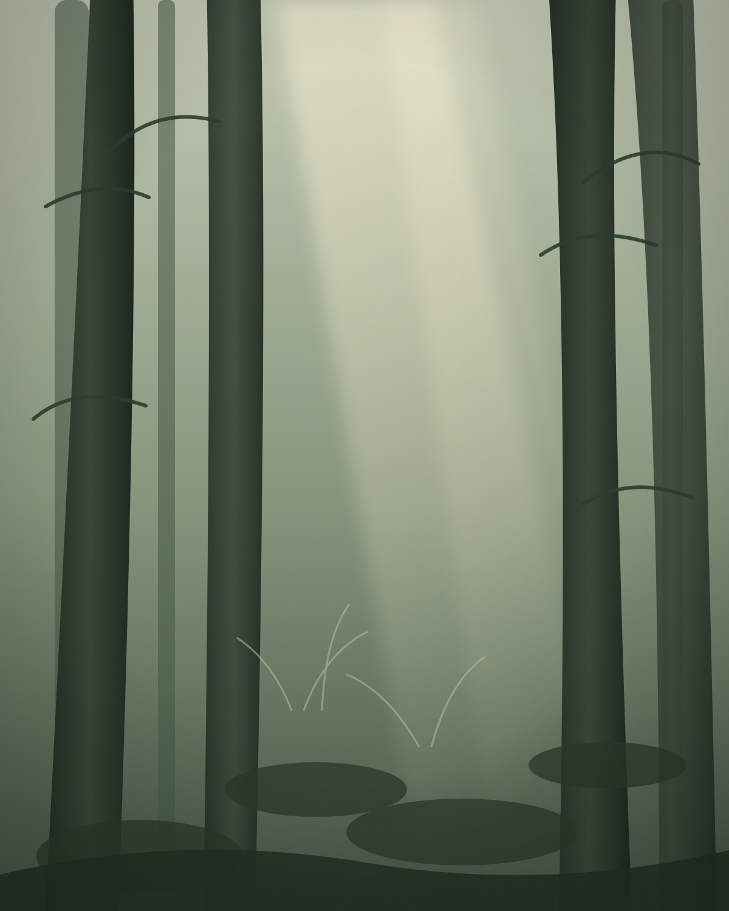
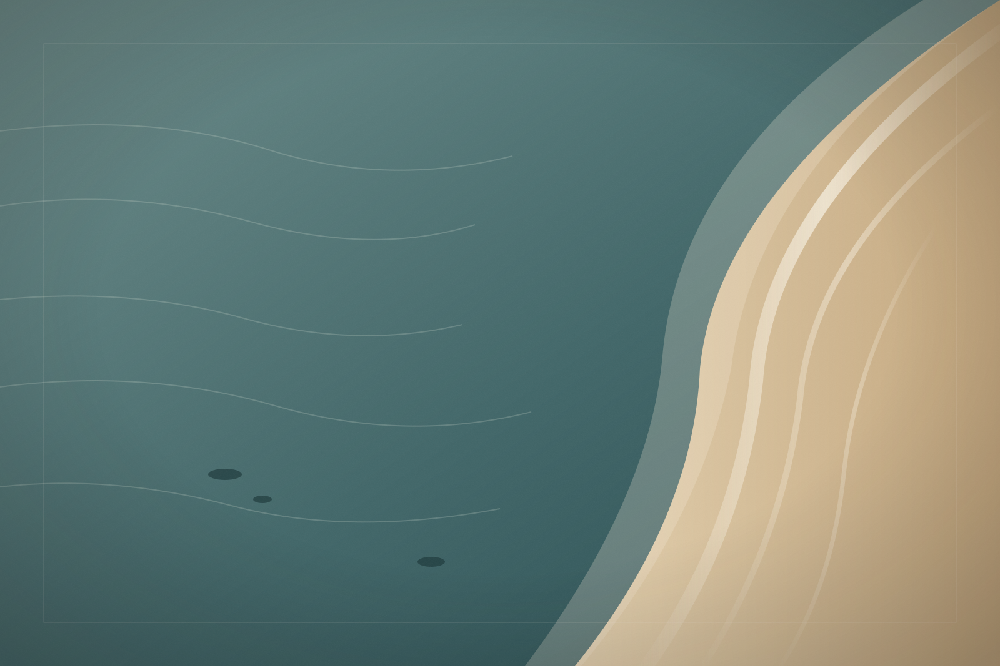
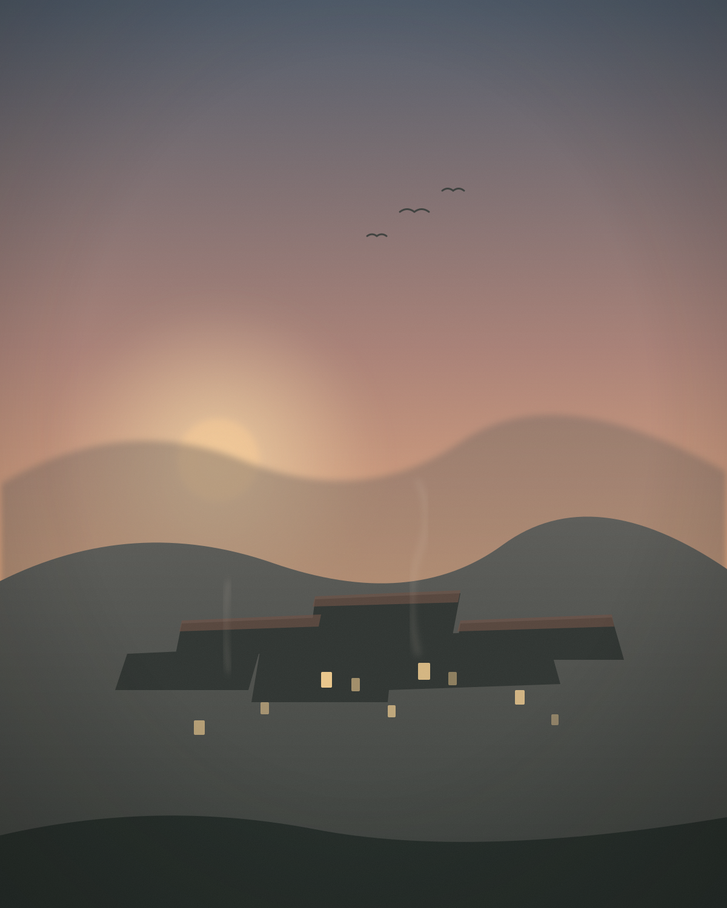

Album 01 / 04 · 2025 秋
山海之间
Between Mountains and Sea
- 年份
- 2025 年秋
- 地点
- 大理 / 霞浦 / 平潭
- 影像
- 15 幅（精选 5 幅）
- 页数
- 32 页
- 介质
- 数码与 35mm 胶片
卷首语 / Prologue
山不言语，海不回答。我们只是从它们之间走过，带回来一些风的形状。
这册影像始于一次没有详细计划的沿海旅行。从大理出发，沿着海岸线向南， 十二天里，我们遇见雾、潮汐、晚归的船，也遇见许多无法命名的蓝。
编排时，我试着让照片自己说话：山的部分安静，海的部分辽阔， 而归途，总是带着一点舍不得的暖色。
拾光 · 2025 年 11 月
Chapter 01The Mountain
山行In the Mist
清晨六点，山脊在雾里缓慢醒来。光线越过一层又一层山峦， 最后落在脚边的蕨类上。

“雾散之前，山是想象的；
雾散之后，山是沉默的。” 旅途笔记 · 第二天
Chapter 02The Tide
潮汐Where the Water Returns
海把一天重复一遍，又一遍。船回来的时候，天色已经软下来， 远处的灯一盏接一盏亮起。


Chapter 03The Way Home
归途Warm Lights
回程那天没有日出。我们在村口坐了很久，看窗户一扇一扇亮起来， 像是在等一个不必说出口的答案。

End Note · 01 / 04
山不会记住我们，
但我们会记得，曾在山里安静地待过。
城市切片
City Fragments · 2025 夏